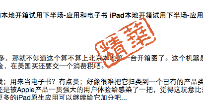
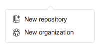

iPad本地开箱试用下半场-应用和电子书 继续之前的帖子发： http://bbs.55bbs.com/thread-3709049-1-20.html 继续之前先回答一些问题： 发完之后才发现有不少同学都发过了，不过不少在美国的，唉... 55藏龙卧虎的牛人太多，那就不知道这个算不算上北京本地第一台开箱图了。这个机器是在美国买的，正好有人从美国回来带回来的，是16GB的wifi版本，不支持3G，价格是499美金，在美国买还要交一个消费税吧。 说到iPad，其实我个人也觉得它的地位似乎不明确？它是用来代替笔记本的？似乎没戏；用来当电子书？有点贵；好像很难把它归类到一个已有的产品类别里，而且我自己一直不太明白买这个玩意干嘛使。不过说实在的，今天试用了一下以后，还是被Apple产品一贯强大的用户体验给感染了一把，觉得这玩意比想象的有趣，有点动心，不过但是到现在也没觉得这是一个必要性非常强的设备，也许未来更多的iPad原生应用可以继续给它加分吧...
